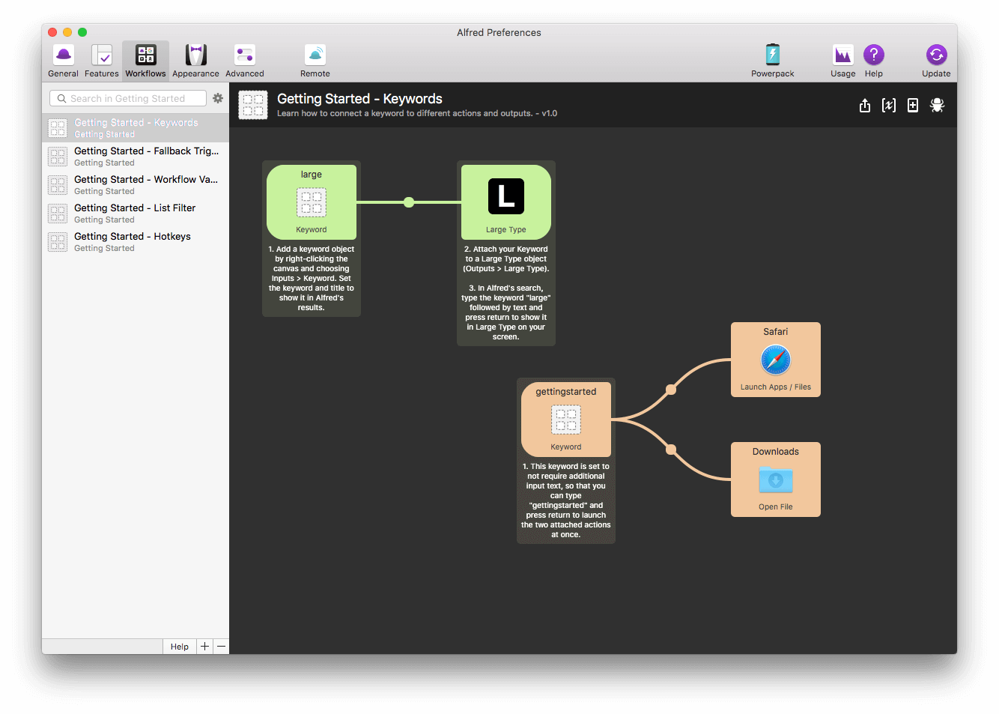
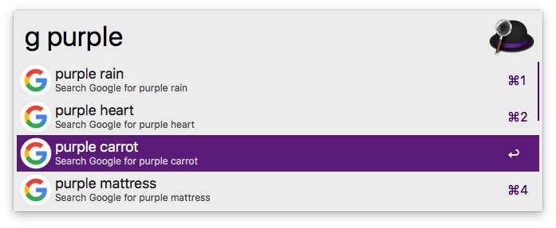

Workflows
Use workflows to extend Alfred and get things done in your own way. By replacing manual tasks or mouse-based actions with workflows, you'll boost your productivity.

Overview: What are workflows?
Workflows are part of the Powerpack features available in Alfred.
You'll find the Workflows section in Alfred's preferences under the "Workflows" header. Take a look at the topics below to discover how workflows can help you make repetitive tasks a thing of the past, making you more efficient on your Mac in ways you never thought possible!
Tip: Every Workflow object includes a question mark icon in its configuration panel when you double-click the object. Click it to be taken to the relevant page and find out more about that particular object.
Want to jump in right away? Add a few workflows from the built-in "Examples" category to see your first workflows in action! :)
Introducing Workflows
- Adding your first workflow
- Downloading and discovering workflows
- Creating your own workflows
- Workflow object types
Workflow object types
To find help on a specific object, navigate to it below, search for it or click the question mark icon in the object's settings in Alfred's Preferences.
- Triggers: Activate Alfred from a hotkey, another Alfred feature or an external source.
- Inputs: Keyword-based objects used to perform an action, on its own or followed by a query.
- Actions: The objects that do most of the work in your workflows; opening or revealing files and web searches, running scripts and performing commands.
- Utilities: Utilities give you control over how your objects are connected together and how the arguments output by the previous object is passed on to the next object.
- Outputs: Collect the information from the earlier objects in your workflow to pop up a Notification Centre message, show output in Large Type, copy to clipboard or run a script containing the result of your workflow.
Adding Your First Workflow
When you first navigate to the Workflows section of Alfred preferences, there are no active workflows in the left sidebar. You can get started by adding an example workflow.
Click on the [+] at the bottom of the sidebar to reveal a menu with five options; Workflow defaults, Getting Started, Examples, Templates and Blank Workflow.
The Getting Started and Examples workflows are a great way to discover what objects do and how you can connect them together; Hotkeys and Keywords are two of the simpler examples. Take a look at the notes on each object to understand how they interact.

The Google Suggest and Amazon Suggest built-in example workflows are incredibly useful to see results in-line.

With every new release, we add Getting Started and Example workflows, so take a look at the built-in workflows every so often.
Downloading and Discovering Workflows
Now that you know how to use workflows and have had a look at the Getting Started and Examples built into Alfred, you'll also find numerous wonderful workflows created by fellow Alfred users.
We've highlighted a few of our favourite workflows, and you'll find hundreds more in the following locations:
- On the Alfred blog
- On the Alfred Forum, where you can also find help with your own workflows
- On Packal, user-created site for workflows and themes created by Shawn Rice
Note: Some of the workflows you find will may been created using older versions of Alfred. These should import and work perfectly in the current version of Alfred as well. Please note that workflows are not backwards compatible to a previous version.
If you don't find what you're looking for, it's worth taking a look on Google as many users choose to host workflows on GitHub or on their own websites.
Creating Your Own Workflows
In Alfred's Workflows preferences, you'll see a [+] button at the bottom of the left sidebar. This is your starting point when creating a new workflow.
The fully functional Examples show you how different types of workflows work, from simple ones like "Should I watch this movie?" to advanced list-based or script-based workflows like the Amazon and Google Suggest which present you with in-line results.
The Templates provide you with a starting point on the workflow canvas. Templates pre-populate your workflow canvas, so that you can just fill in the gaps.
If you prefer starting with a Blank workflow, choose "Blank Workflow" from the bottom left [+] menu, then right-click anywhere on the workflow canvas to start choosing objects to add to your workflow.
At any time, you can find help on a specific object by clicking the question mark icon in the object's settings in Alfred's Preferences. And most of all, have fun!
Making the Most of Workflows
Once you've grasped the basics of workflows, you'll find numerous ways to improve them; From simply organising and sharing them with fellow Alfred users, to using variables and scripts to create an advanced workflow.
- Organising workflows with categories and defaults
- Exporting and Sharing Workflows
- Workflow Troubleshooting
- Using the Workflow Debug Utility
Advanced workflow topics
- Setting Variables in Workflows
- Script Environment Variables
- Using Alternative Actions in workflows
- Using Script Filter objects
- Workflow Object Inbound Configuration
Need help with workflows? Pop by the Alfred forum to chat with fellow creators and find answers to your questions. :)